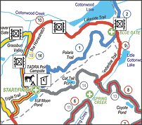

<!--#set var="VAR_doctitle" value="The Grasslands Run - North Texas Trail Runners" -->

<div class="well well-non-rounded">
	<div class="row content">
		<div class="col-sm-9">
			<h2>Course Info &amp; Maps</h2>

			

			<p>
			<span class="section-title">Overview</span>
			The trail is a cloverleaf configuration with the start/finish located in the center.
			</p>
			<p>
			<span class="section-title">Course Maps</span>
			Each link below opens in a new browser tab.
			<a href="map-2010-overview.pdf" target="_blank">Course Overview</a> (2MB PDF)<br/>
			<a href="map-2010-50-mile.pdf" target="_blank">50-Mile</a> (2MB PDF)<br/>
			<a href="map-2010-marathon.pdf" target="_blank">Marathon</a> (2MB PDF)<br/>
			<a href="map-2010-half-marathon.pdf" target="_blank">Half-Marathon</a> (2MB PDF)<br/>
			<a href="course-descriptions.pdf" target="_blank">Course Descriptions</a> (text/PDF)
			</p>

			<p>
			<span class="section-title">MapMyRun / Google Maps</span>
			These maps may help you understand elevation changes. <br/>
			Each link opens a new browser tab.<br/>
			<a href="http://www.mapmyrun.com/routes/view/26846040" target="_blank">Correction</a> (Out &amp Back)<br/>
			<a href="http://www.mapmyrun.com/routes/view/26921954" target="_blank">Blue</a> (Loop)<br/>
			<a href="http://www.mapmyrun.com/routes/view/27197908" target="_blank">White</a> (Loop)<br/>
			<a href="http://www.mapmyrun.com/routes/view/26936590" target="_blank">Yellow</a> (Loop)<br/>
			<a href="http://www.mapmyrun.com/routes/view/26848312" target="_blank">Red</a> (Loop)<br/>

			</p>
			<p>
			<span class="section-title">Aid Station Information</span>
			<a href="#aid-stations">Aid station overview</a><br/>
			</p>
			<p>
			<span class="section-title">Other Maps</span>
			<a href="#directions">Directions to Grasslands</a><br/>
			<a href="#medical-facility">Local Medical Facility</a>
			</p>


		</div>
		<div class="col-sm-3 sidenav">
			<div class="sponsor-content">
				Sponsor Content
			</div>
		</div>
	</div>
</div>